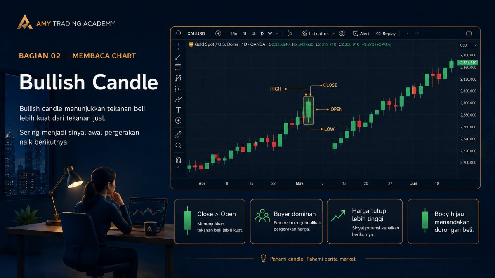
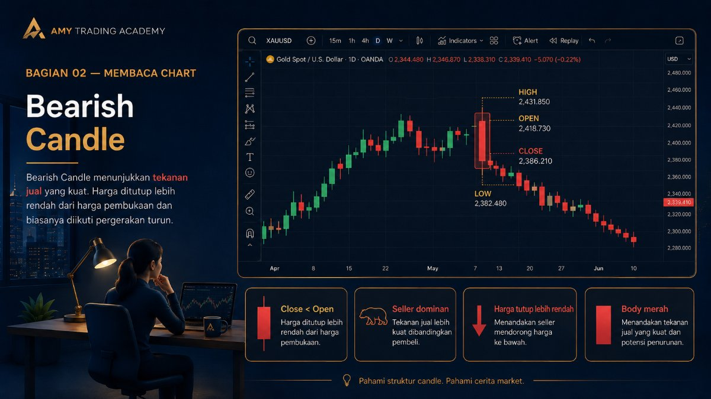
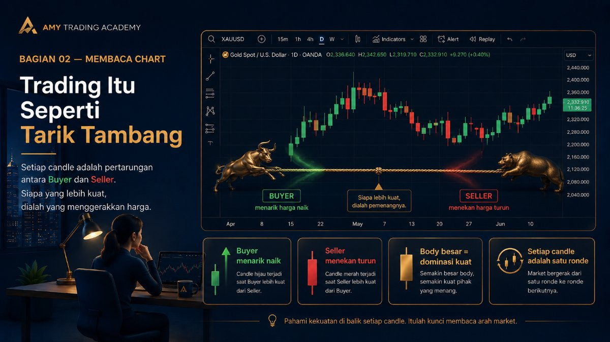
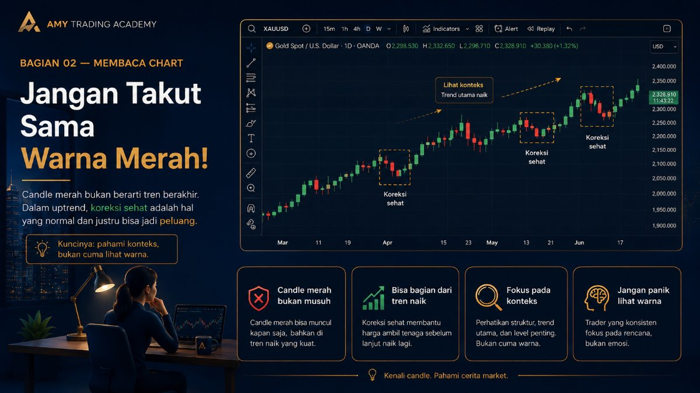

Bullish Candle dan Bearish Candle
Di dunia trading, kamu akan sering mendengar istilah yang mungkin terdengar lucu di awal: Bull (Banteng) dan Bear (Beruang). Dua binatang ini adalah maskot tak resmi dari pasar keuangan dunia. Tapi kenapa harus banteng dan beruang? Kenapa bukan kucing dan anjing?
Jawabannya ada pada cara kedua hewan ini menyerang musuhnya:
- Banteng (Bull): Menyerang dengan cara menundukkan kepala, lalu menanduk musuhnya ke atas. Ini melambangkan harga yang bergerak naik.
- Beruang (Bear): Menyerang dengan cara berdiri, lalu mencakar musuhnya ke bawah. Ini melambangkan harga yang bergerak turun.
Dari filosofi inilah lahir istilah Bullish Candle dan Bearish Candle. Mari kita bedah satu per satu.
Bullish Candle (Lilin Si Banteng)

Bullish Candle adalah candle yang terbentuk ketika harga penutupan (Close) lebih tinggi daripada harga pembukaan (Open). Di sebagian besar platform trading seperti MetaTrader atau TradingView, candle jenis ini biasanya secara default diberi warna Hijau atau Putih.
Apa cerita di baliknya? Munculnya bullish candle menandakan bahwa pada periode waktu tersebut, Pembeli (Buyer) sedang mendominasi pasar. Permintaan (Demand) lebih besar daripada penawaran (Supply).
Bayangkan sebuah sepatu sneakers edisi terbatas. Saat toko pertama kali buka (Open), harganya Rp 2 juta. Karena banyak banget yang ngantri dan rebutan beli, stok mulai menipis. Orang-orang rela bayar lebih mahal asal dapat barangnya. Akhirnya saat toko tutup (Close), harga pasaran sepatu itu sudah naik jadi Rp 3 juta. Jarak dari 2 juta ke 3 juta ini membentuk body hijau yang tebal. Ini adalah kondisi Bullish.
Bearish Candle (Lilin Si Beruang)

Sebaliknya, Bearish Candle adalah candle yang terbentuk ketika harga penutupan (Close) lebih rendah daripada harga pembukaan (Open). Biasanya, candle jenis ini diberi warna Merah atau Hitam.
Apa cerita di baliknya? Munculnya bearish candle menandakan bahwa Penjual (Seller) sedang menguasai keadaan. Penawaran (Supply) barang sedang banjir, tapi yang mau beli sedikit.
Bayangkan sebuah handphone seri lama. Saat toko buka (Open), harganya Rp 5 juta. Siang harinya, tiba-tiba pabrik mengumumkan rilis HP seri terbaru yang jauh lebih canggih. Orang-orang jadi batal beli HP seri lama. Pemilik toko panik, takut barangnya nggak laku dan numpuk di gudang. Akhirnya mereka banting harga supaya HP itu cepat terjual. Saat toko tutup (Close), harganya jatuh jadi Rp 3.5 juta. Jarak turun dari 5 juta ke 3.5 juta ini membentuk body merah. Ini adalah kondisi Bearish.
Trading Itu Seperti Tarik Tambang

Jangan melihat candle satu per satu secara kaku. Bayangkanlah chart sebagai sebuah arena perlombaan Tarik Tambang antara Tim Banteng (Buyer) melawan Tim Beruang (Seller). Setiap satu batang candlestick adalah hasil dari satu ronde perlombaan tersebut.
Ingat: Ukuran itu penting! Bullish candle (hijau) yang sangat panjang dan tebal berarti Buyer menang telak tanpa perlawanan berarti. Tapi kalau bullish candle-nya kecil dan tipis, itu berarti Buyer menang susah payah dan kekuatannya mungkin mulai melemah.
Jika kamu melihat rentetan 4 atau 5 candle hijau berturut-turut, itu berarti Tim Banteng sedang menang beruntun dan memegang kendali (Uptrend). Tapi awas, sekuat apapun sebuah tim, mereka pasti butuh istirahat. Jadi jangan kaget kalau setelah beberapa candle hijau besar, akan muncul candle merah kecil sebagai bentuk "istirahat" sebelum mereka menarik tambang lagi.
Jangan Takut Sama Warna Merah!

Perhatian: Berbeda dengan investasi saham tradisional di mana kita cuma bisa untung kalau harga naik, di dunia trading forex, crypto, atau komoditas, kita bisa mendapatkan profit dari kedua arah!
Sebagai trader, kita nggak boleh baper (bawa perasaan) terhadap warna candle. Kalau market sedang dikuasai banteng (hijau), kita ikut tim banteng dengan membuka posisi Buy. Tapi kalau market sedang dikuasai beruang (merah) dan harga sedang jatuh bebas, kita juga bisa untung dengan bergabung bersama tim beruang, yaitu dengan membuka posisi Sell (Short-Selling).
Tugas kita bukan memaksa pasar agar selalu hijau. Tugas kita adalah membaca siapa yang sedang lebih kuat saat ini, lalu nebeng (ikut) di belakang mereka. Di materi selanjutnya, kita akan membahas lebih dalam tentang kekuatan (momentum) ini melalui ukuran Body dan Wick.